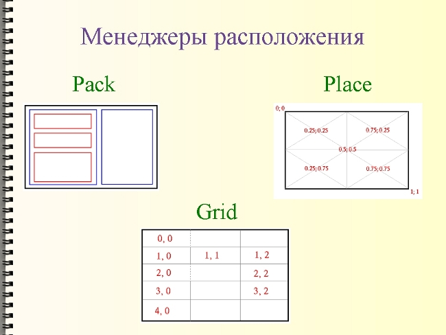
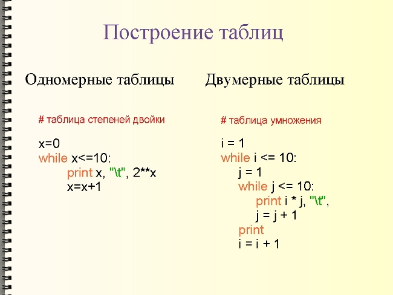
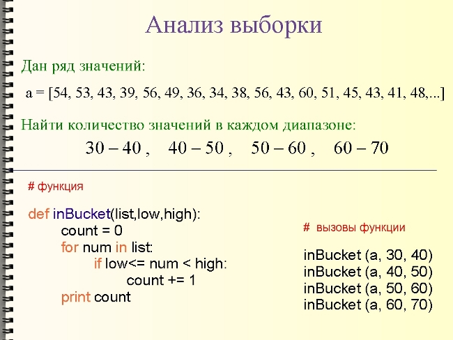
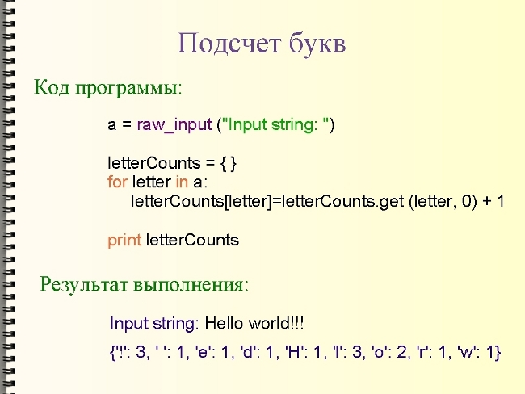

Целью нашей работы было создание электронного учебника по языку программирования Python, который в настоящее время активно развивается и набирает популярность. Однако русскоязычной документации по этому языку не так уж и много.
Питон создал в 1991 году голандец Гвидо Ван Россум и назвал так в честь комедийного сериала.
Следует отметить следующие особенности этого языка:
Официальный сайт Питона – http://python.org/. Есть несколько русскоязычных ресурсов по Python`у: самый большой из них http://python.ru/. Помимо прочего, там собрана вся русскоязычная документация. Однако ее не так уж и много, а та что есть больше подходит для профессиональных программистов. Поэтому мы решили создать небольшой электронный учебник для начинающих программистов. Кстати, Питон может быть хорош для начинающих из-за своего легкого синтаксиса.
Содержание учебника в основном формировалось нами на переработке двух книг: Чаплыгин А. Н. Учимся программировать вместе с Питоном и Россум, Г. и др. Язык программирования Python.
Содержание учебника формировалось из основных понятий, характерных для большинства языков программирования. Например, таких как типы данных, условия, циклы, функции. А также из специфических для самого Питона. Например, модули, последовательности и словари, а также некоторые возможные области применения Питона. Во втором варианте учебника мы также сделали раздел посвящённый основным парадигмам программирования (структурному, функциональному и объектно-ориентированному).[демонстрация второго варианта учебника]
Нами был создан небольшой электронный учебник по Питону, с помощью средств самого языка. Графический интерфейс был создан с помощью библиотеки Tkinter, которая входит в стандартную поставку.
В учебнике есть меню из кнопок, текстовые поля с полосами прокрутки для текста и примеров программ, а также так называемый холст для рисунков. Холст – это экземпляр объекта canvas. Изображения на нем (например, линии, прямоугольники) были получены с помощью соответствующих методов. Существует два варианта учебника: в одном – графика и примеры программ располагаются во внешних виджетах по отношению к основному тексту [демонстрация первого варианта учебника]; в другом – внутри [демонстрация второго варианта учебника]. Tkinter содержит методы позволяющие одни текстовые поля и холсты вставлять в другие.
Конструирование графического интерфейса в Питоне является невизуальным, поэтому используются так называемые менеджеры расположения. В Tkinter есть три менеджера расположения: pack (простой упаковщик), place (произвольное расположение) и grid (сетка). В учебнике были использованы методы pack и place. [слайд]

[Перезагрузка системы]
Учебник работает как в операционной системе Windows, так и Linux. Однако в любой системе должны быть заранее установленны интерпретатор Питона и модуль Tkinter. Для того, чтобы открыть учебник в Windows достаточно два раза кликнуть файл, а в Linux его можно открыть из консоли передав команде python в качестве параметра имя файла.
Как вы можете заметить, в Linux учебник выгладит немного по-другому. Это связано с тем, что здесь в системе присутствуют другие шрифты; и большинства шрифтов, которые есть в Windows, нет. Это единственная проблема, с которой мы столкнулись при переносе учебника из одной операционной системы в другую, однако она достаточно существенная. К тому же, мы проверяли учебник в разных дистрибутивах Линукс и везде он выглядел по своему. На данный момент проблема решается, можно сказать, механически – просто открывается исходный код изменяются параметры связанные со шрифтами. Хотя это сделать и достаточно просто, мы пришли к выводу, что лучше сделать отдельные функции, содержащие метоты для форматирования текста в той или иной операционной системе, а пользователю просто позволить выбирать ту или иную схему в зависимости от системы.
Применение Python
Первое, что можно рассмотреть, как возможную область применения Питона – это построение таблиц значений функций.
Большинство учебников по математике имеют приложения с таблицами значений различных функций. Раньше такие таблицы создавались вручную. Сейчас это делают с помощью компьютера. С помощью Питона можно быстро запрограммировать создание таких таблиц: достаточно использовать лишь цикл и символ табуляции (отступа).[пример таблицы степеней двойки] Также можно построить двумерную таблицу, если использовать вложенный цикл. Для примера можно взять таблицу умножения. В принципе сюда можно подставить любую формулу.

x=0 while x<=10: print x, "\t", 2**x x=x+1 raw_input()
i = 1 while i <= 10: j = 1 while j <= 10: print i * j, "\t", j = j + 1 print i = i + 1 raw_input()
Также Питон можно использовать для написания программ для научных вычислений. Напрмер, анализа выборки.
Часто требуется проанализировать какой-то ряд значений и определить количество значений, попавших в определенный диапазон. [слайд]

Можно создать функцию, которая будет просматривать список значений и считать количество значений, попадающих в один определенный диапазон.[слайд] И затем вызывать эту функцию, подставляя разные аргументы.[слайд]
def inBucket(list,low,high): count = 0 for num in list: if low<= num < high: count += 1 print count a = [54, 53, 43, 39, 56, 49, 36, 34, \ 38, 56, 43, 60, 51, 45, 43, 41, 48, 58, 39, 36] inBucket (a, 50, 60) raw_input()
Можно усовершенствовать программу, так, чтобы она запрашивала у пользователя сам список значений [работа с программой], нижнюю границу первого диапазона, верхнюю – последнего и количество требуемых диапазонов. В итоге, программа будет выдавать сколько значений попало в каждый диапазон.
def inBucket(list,low,high): count = 0 for num in list: if low<= num < high: count += 1 print count a = input ("input list: " ) low = input ("input low: ") high = input ("input high: ") numBuckets = input ("input numBuckets: ") bucketWidth = (high-low)/numBuckets buckets=[0]* numBuckets high = low for i in range (numBuckets): low = high high = bucketWidth + high print low, "to", high buckets[i]=inBucket(a,low,high) buckets raw_input()
Но еще более оригинальный способ решения похожей задачи – это использование одного из типов данных Питона – словаря. Используя его, можно потом строить гистограммы букв в строке, т.е. вычислять сколько раз каждая буква появляется в строке. Такие гистограммы могут пригодиться для расшифровки кодов, или для компрессии текстовых файлов. Так как различные буквы появляются с различными частотами, мы можем сжать файл, используя короткие коды для распространенных букв и длинные коды для букв, которые появляются менее часто.

[работа с программой] Начинаем с пустого словаря. Для каждой буквы в строке мы находим текущий счетчик и увеличиваем его на единицу. В конце словарь содержит пары: буквы и их частоты.
a=raw_input("Input string: ") letterCounts = {} for letter in a: letterCounts[letter]=letterCounts.get (letter, 0) + 1 print letterCounts raw_input()
В итоге можно сказать, что Питон – это идеальный язык для быстрого написания различных приложений, при этом код получается более компактный.
| Прикрепленный файл | Размер |
|---|---|
| Презентация к докладу | 83.59 кб |